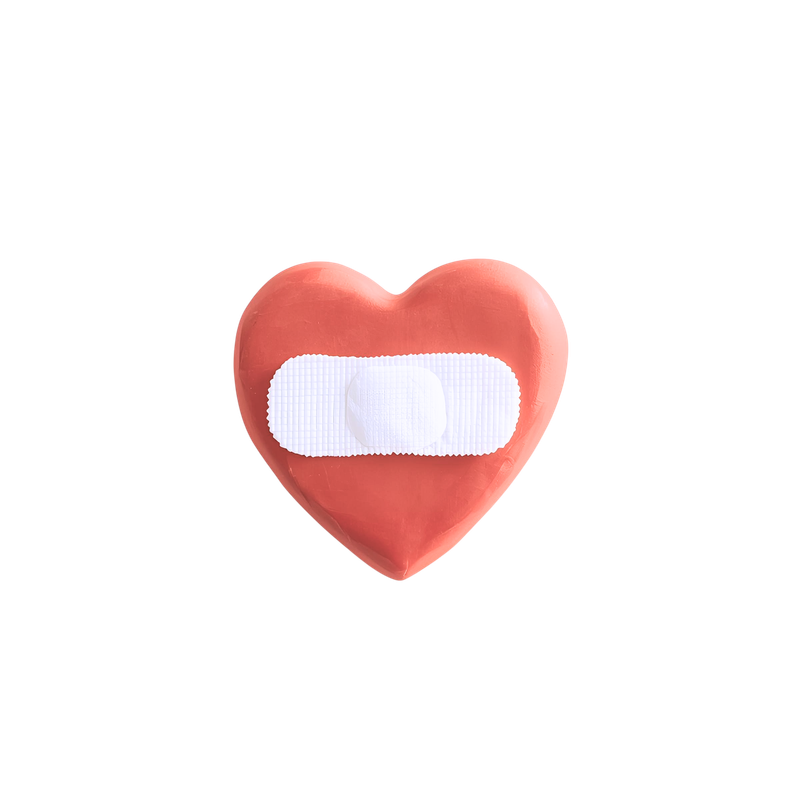

À propos

Passionnée depuis toujours par la conscience humaine et la santé mentale, j'ai construit mon parcours professionnel autour de ces deux piliers[cite: 6]. Ma curiosité et mon désir d'aider les autres m'ont menée vers des études de psychologie, où j'ai acquis une compréhension approfondie des mécanismes du psychisme[cite: 6].
Mon chemin a ensuite pris une direction inattendue vers les ressources humaines[cite: 6]. Cette expérience m'a permis de me familiariser avec les défis quotidiens du monde professionnel et de comprendre l'importance de l'équilibre entre vie personnelle et vie professionnelle[cite: 6].
Je vous accueille aujourd'hui avec un désir profond, celui de vous accompagner vers une meilleure connaissance de vous-même[cite: 6].
La sophrologie permet de se renforcer, d'améliorer son quotidien en portant un nouveau regard sur son présent et son avenir[cite: 6].
Chaque séance est une parenthèse que vous vous accordez dans un cadre bienveillant, sans jugement[cite: 6].
Je suis impatiente de vous accueillir afin de vous aider à redéfinir et à cultiver votre épanouissement personnel[cite: 6].